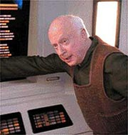
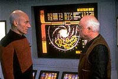
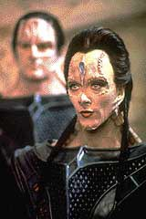
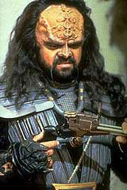
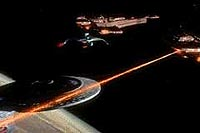
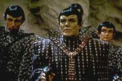
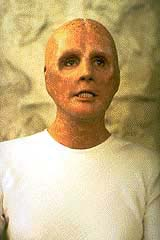
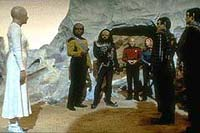

|
por
Fernando Penteriche
Em Jornada nas Estrelas
existem muitos mistrios. Por exemplo, todas as raas falam ingls
fluente, at as encontradas no Quadrante Delta pela Voyager. E no
me venha com essa de "tradutor universal" acoplado na
insgna da Frota (como "explicado" no episdio "The
37's" de Voyager), que eu no engulo. Nas naves
da Federao e com raas conhecidssimas, como Klingons e
Cardassianos, tudo bem, mas nos demais casos...
E esse s um dos mistrios que jamais so explicados com
exatido. Na coluna de hoje quero abordar um destes mistrios: o
porqu de 98% das raas encontradas em Jornada serem
humanides. Todos so iguaizinhos aos terrqueos, apenas
pequenas mudanas no nariz, orelhas, algumas pintas, testa
diferente e afins. De resto, so dois braos e duas pernas para
todos, sendo que todos os planetas tem gravidade igual da Terra
(ok, no episdio "Melora" de Deep Space Nine
aparece uma aliengena de um planeta com gravidade diferente da
nossa, mas no momento o que me interessa A Nova Gerao).
Sobre essa incrvel disseminao humanide pela Galxia, um
episdio em especial traz algumas respostas. "The
Chase", um episdio do 6 ano bem "Roddenberriano".
 O
ano 2369, e a data estelar, 46731.5. Picard surpreendido
pela chegada na Enterprise do professor Richard Galen, um cone
da histria da arqueologia, e antigo mestre de Picard nessa matria.
Para quem no sabe, Picard vidrado em arqueologia, e no
passado teve que optar se seguiria carreira na Frota ou seria um
arquelogo, pois, segundo o Prof. Galen, Picard foi um de seus
mais promissores pupilos.
Ocorre que Galen no veio a bordo para fazer uma simples visita
ao "sr. Picard", como ele o chama. Na verdade, o intuito
do professor fazer com que o capito abandone temporariamente
o comando da Enterprise para juntar-se a ele em uma misso que
durar cerca de um ano.
 Galen
fez uma descoberta que ecoar por toda a galxia, mas ele s a
revelar para Picard no momento em que ele concordar em juntar-se
ao professor em busca da concluso da descoberta. Embora o capito
fique com "gua na boca" de se juntar a Galen, ele
declina da proposta, pois suas responsabilidades com a Enterprise
so importantes demais para que ele fique ausente por um perodo
to longo. Galen acaba partindo sozinho em sua nave auxiliar.
Algum tempo depois, a Enterprise recebe um pedido de socorro da
nave de Galen: ele est sendo atacado pelos Yridians. A
Enterprise dispara em dobra nove para encontrar-se com o
professor, e ao chegar Worf inadivertidamente acaba por destruir a
nave agressora com um disparo feiser. E o pior que Galen acaba
sendo seriamente ferido por um disparo a queima-roupa dos Yridians,
e vem a morrer na enfermaria da Enterprise, levando o segredo para
o tmulo.
Na tentativa de descobrir o porqu do ataque nave do
professor, a tripulao da Enterprise acaba por descobrir 19
estranhos blocos de nmeros armazenados no computador do veculo.
Aps a anlise desse material, Picard tem a impresso que a
resposta estaria no planeta Ruah IV, que faz parte do sistema
solar inexplorado que Galen visitou antes de contactar a
Enterprise. Deixando de lado uma conferncia diplomtica da qual
teria que participar, a Enterprise vai ao encontro de Ruah IV, e
talvez de uma resposta. Porm nada encontrado por l, e
Picard opta por continuar a investigao no planeta Indri VIII,
onde o prof. Galen planejava ir antes de ser atacado.
 Ao
chegar em Indri VIII, a tripulao descobre que tudo o que tem
vida no planeta est morrendo, levando Picard a acreditar que os
blocos de nmeros do Professor Galen tm algo a ver com matria
orgnica. Aps estudar estes blocos, Picard e a dra. Beverly
Crusher chegam concluso de que so representaes matemticas
de fragmentos de DNA, um de cada forma de vida de 19 diferentes
planetas espalhados pelo quadrante. Picard decide ento que a
Enterprise rume para o planeta Loren III, o nico capaz de
sustentar vida na rea que o professor estava estudando. Ao
chegar, a surpresa: duas naves Cardassianas e uma nave Klingon esto
em rbita, pelo mesmo motivo da Enterprise.
 Aps
um confronto inicial, Picard convence a comandante Cardassiana,
Gul Ocett, e o capito Klingon Nu'Daq a ceder suas respectivas
amostras para acharem um meio de resolver esse mistrio juntos.
descoberto que falta um fragmento de DNA para fechar o
quebra-cabea, e pelo computador da Enterprise tida a localizao
do planeta em que possivelmente estar o tal fragmento. Quando a
descoberta anunciada, a comandante Cardassiana se
teletransporta de volta sua nave, e as duas naves Cardassianas
disparam na Enterprise e na nave Klingon, para impedi-las de
chegarem ao planeta. Ento as naves de Cardssia entram em dobra
espacial e seguem atrs do planeta onde est o fragmento
perdido.
 Porm
a Enterprise, com o aliado Klingon Nu'Daq a bordo, ajusta curso
para o setor Vilmoran. Logo aps a chegada e posterior descida ao
planeta, mais uma surpresa: alm da comandante Cardassiana, l
est ainda um grupo de Romulanos (!), que seguira a nave de Gul
Ocett camufladamente.
 Gul
Ocett prefere destruir as amostras de DNA a trabalhar em conjunto
com as outras raas. Enquanto ocorre um "bate-boca"
entre Worf, Gul Ocett, Nu'Daq e os Romulanos, Picard e Beverly
aproveitam para retirar uma amostra de um fssil do planeta,
utilizando-se do miraculoso tricorder. Ao fazer isso, em conjuno
com os blocos do prof. Galen armazenados no tricorder, um programa
iniciado, e uma gravao em holograma de um ser humanide
(sim, o tricorder emite hologramas...) feita h BILHES de anos
ativada, para espanto geral. ( incrvel a compatibilidade de
softwares em Jornada nas Estrelas... Enquanto um programa
feito por uma raa j esquecida h bilhes de anos roda em um
tricorder padro da Federao, eu no consigo abrir o FIFA
2001 no Windows ME de maneira alguma...)
O holograma diz o seguinte:
 "Vocs
devem estar imaginando quem ns somos. Quem veio antes de vocs.
O que vocs vem a imagem de um ser que deixou de existir h
muito, muito tempo. A vida evoluiu em meu planeta, muito antes de
existir em qualquer outra parte dessa galxia. Ns samos de
nosso planeta. Exploramos as estrelas...e no encontramos ningum
como ns... Nossa espcie viveu por muito tempo... Mas o que
o tempo de vida de uma espcie, perto do tempo de que dispe o
Universo? Sabamos que um dia iramos embora, e nada do que ns
fomos sobreviveria. Porm, ns deixamos vocs!
"Nossos cientistas semearam muitos planetas como o nosso, porm
apenas os que a vida ainda no havia sado da infncia. O cdigo
presente nestas sementes nortearam a sua evoluo, transformado
vocs, fisicamente, em seres como ns, como este corpo, que voc
v a sua frente. Esse cdigo das sementes tambm continha esta
mensagem, que estava espalhada pelo cosmos, em diversos planetas.
Era a nossa esperana que vocs se unissem, com amizade e
cooperao, para buscar essa mensagem, e se vocs esto me
vendo e ouvindo agora, nossa vontade foi feita. Vocs so um
monumento, no da nossa grandeza, mas da nossa... existncia.
 "Nosso
desejo que vocs perpetuem a vida, e mantenham viva nossa memria.
Tem algo de ns em cada um de vocs, e algo de vocs, nos
outros. Lembrem-se de ns..."
A explicao de uma antiga raa de "semeadores"
bem interessante. Uma plausvel teoria, em um bonito episdio,
que a cara de Jornada nas Estrelas. Sem dvida um
momento feliz da 6 temporada da Nova Gerao.
|